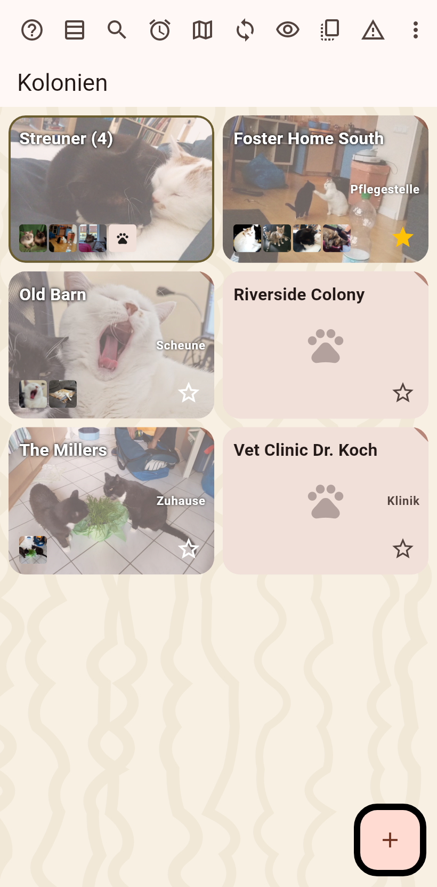
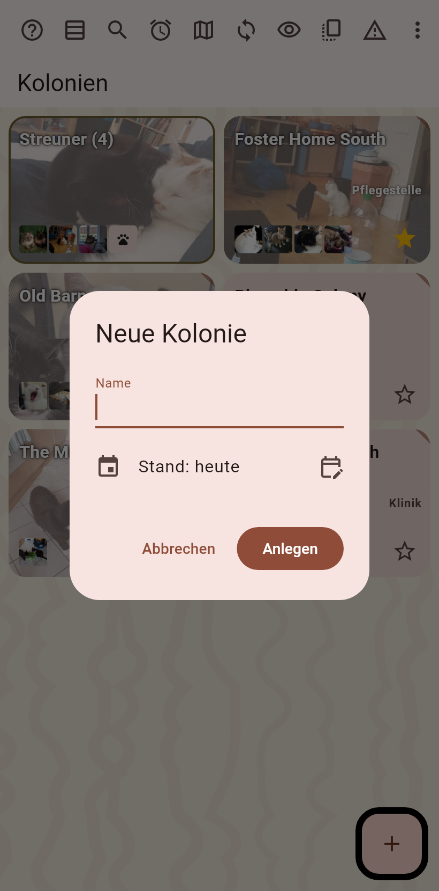
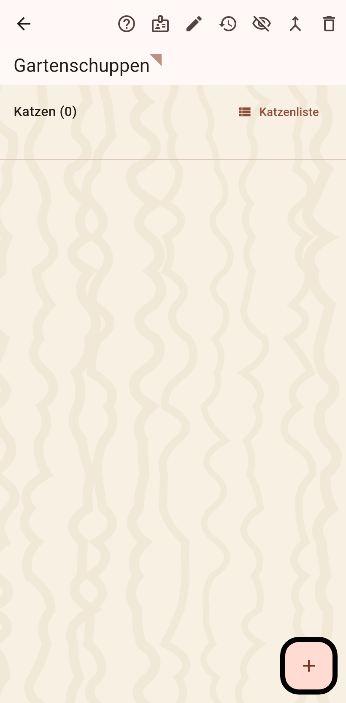
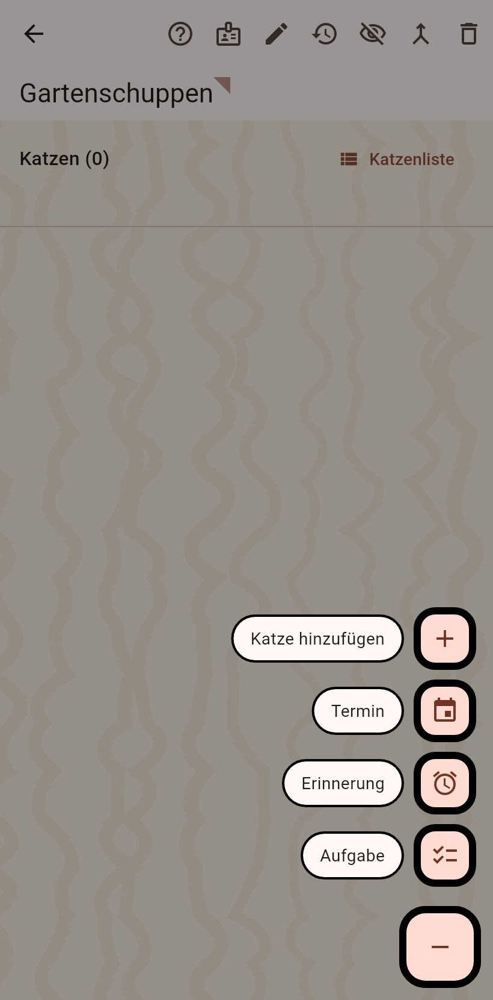
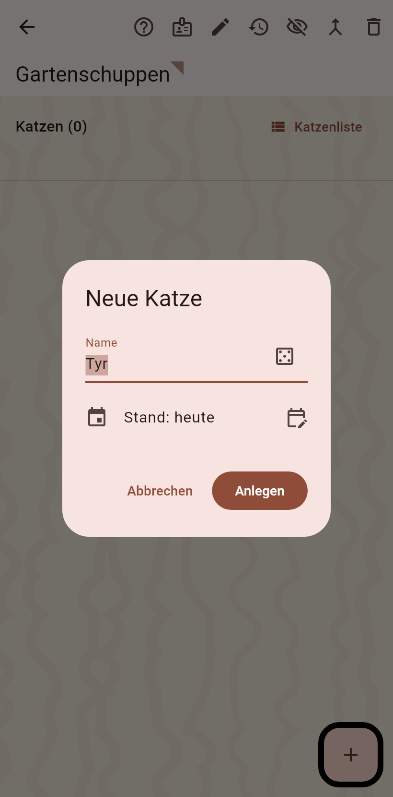
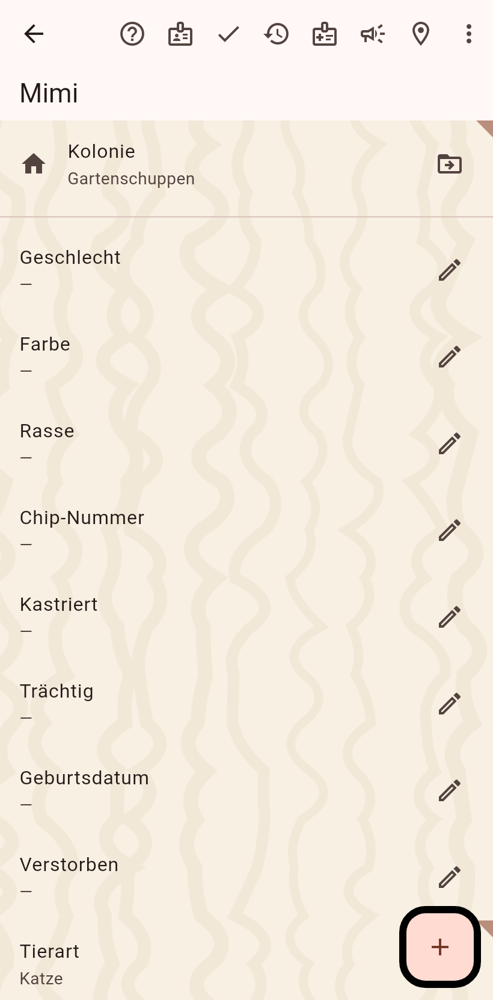

1. Die Startseite
Deine Kolonien als Karten. Der Knopf unten rechts legt eine neue an.

2. Die Kolonie benennen
Ein Dialog fragt nach dem Namen; das Datum, ab dem sie zählt, ist heute, wenn du kein anderes setzt. Anlegen.

3. Die Kolonieseite
Die neue Kolonie öffnet sich, leer. Ihre Felder füllst du beim Bearbeiten; das Plus trägt Katzen ein.

4. Die Wege, eine Katze einzutragen
Das Plus fächert auf: eine neue Katze von Hand, ein Foto jetzt, eines aus der Galerie, Bilder aus einem Video.

5. Die Katze benennen
Ein Name wird vorgeschlagen; der Würfel wirft einen anderen. Die Tierart wird nur im Haustiermodus gefragt.

6. Die Katzenseite
Die Katze öffnet sich im Bearbeitungsmodus: Felder über den Stift, Fotos über das Plus. Fertig in der Leiste verlässt das Bearbeiten.
